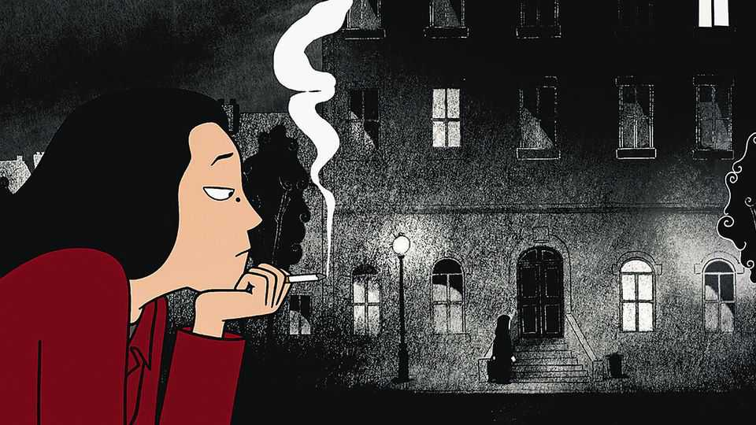
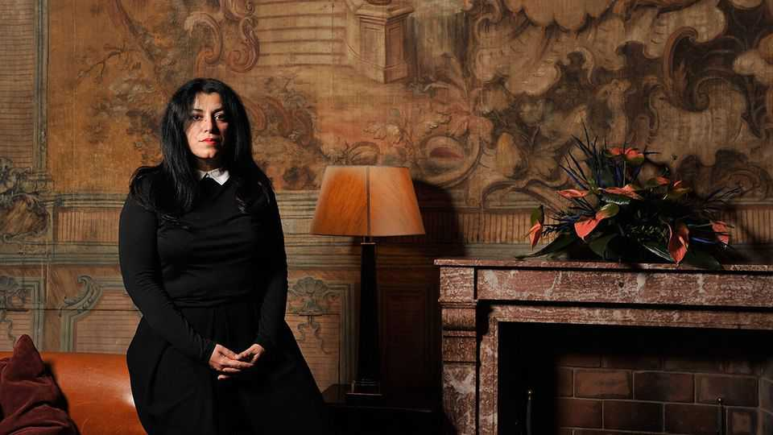

Marjane Satrapi set out to correct the West’s views of Iran
The author of “Persepolis”, an international sensation, died on June 4th, aged 56
June 11th 2026

When it happened, she was ten. Her face stared out separately from a line of grim little girls, all wearing black veils. She didn’t see why she had to; no one had explained. In the playground the veils came off (too hot anyway) to make strangler scarves and skipping ropes. On that first page of “Persepolis”, Marjane Satrapi’s graphic novel of 2000, it was already clear that Marji, her child-self, would not be told what to wear or how to behave. She knew who she was: the last Prophet, born to bring celestial light. She had already written her own book of Rules (Rule 6: Everybody should have a car). Iran’s Islamic Revolution in 1979 forced her to look demure, and she was outraged.
It was so hard to fit in. Her bright, bourgeois parents were Marxists; her head was filled early with dialectic materialism, which she read about in bed. Teachers and preachers held no terror for her, nor any heavy-bearded official who would not look a woman in the eye. Speaking her mind got her expelled from school and into trouble with the regime’s morality police. But why shouldn’t she walk out in the tight jeans and denim jacket her parents had bought for her, or in lipstick, with a bit of hair showing? Why shouldn’t she politicise the maid by taking her along to protests? And what was wrong with going out at night to buy Iron Maiden tapes from the men with suitcases on Gandhi Avenue?
In mullah-ruled Iran she lived two lives, but so did many people. In public, men grew beards and removed their ties. Women went black-robed all over. Everyone recited the same politico-religious nonsense, especially during the war with Iraq, when the martyrs (their bodies dissolving into ghosts, with the golden keys to paradise swinging round their necks) were honoured with twice-daily breast-beatings. In private, certainly in the houses of her parents and their neighbours, there could be riotous drinking and dancing; her father once had to distract the police while she and her grandmother, in panic and quickly back in their chadors, emptied all the alcohol down the loo.
Her double life continued after she left Iran for Austria, at 14, to continue her education. But there the hypocrisy was reversed. As she grew she lived a free, wild European life, doing drugs, being punk and sleeping around, but inside she was ashamed. Assimilation meant betrayal; by 19, she needed to go back to Iran. Putting on her veil again, she thought: “So much for my individual and social liberties,” with a face as sad as when she had tied it first.
Words were hardly necessary. Her expression said it all. Throughout the two parts of “Persepolis” her face dominated the pages, sulky or scared, angry or exploding with laughter, rippling like a puddle as she tripped on drugs. In the simplest drawings, with the tiniest nicks of her pen, the most complex emotions could come through. Drawing nailed them, when writing was too hard; it was, after all, the first language of humans. She preferred her books to be called “comic”, not “graphic”, and she had fun, but the modern history of Iran kept tipping towards the dark. At the most harrowing moment of the first volume, when she found her Jewish friend Neda’s bracelet (“still attached to...I don’t know what...”) in a house just destroyed by an Iraqi missile, the final panel was plain black. No scream; no drawing either. Nothing.

From time to time her interest shifted. After the success of “Persepolis”, including an animated film in 2007 that won her an Oscar nomination, she tried directing films for a time. She went back to drawing, though, in 2024, when she collaborated with 17 artists to produce “Woman, Life, Freedom”, the story of Mahsa Amini, an Iranian girl who died in custody after wearing her veil “improperly”. This revived her sempiternal theme, the repression of women. At art school in Iran, after her return, she mocked the absurdity of “life classes” in which the female-only model was draped from head to toe. Her real feminist heroine, however, was her grandmother, who had endured several varieties of 20th-century patriarchy, from Mossadegh to the Shah to the ayatollahs, and had emerged smiling (once her morning opium had kicked in), shockingly frank, and wise. In “Embroideries” (2003), she and a group of other women spent an enjoyable teatime discussing men, their precious penises, their ridiculous hang-ups, and how to fake virginity on your wedding night. Her sly remarks were the most eyebrow-raising.
It was with her grandmother that Marjane walked by the Caspian sea before, in 1994, she left Iran for good. After five years, her return had not worked out. She had married and then divorced, realising that she couldn’t possibly seal her position in society so firmly. At the margin was where she felt comfortable: commenting, rebelling, chain-smoking. She was bound for France, where she stayed, married happily and, in 2006, became a citizen. France loudly claimed her, but Iran was still home. Despite the beauty of Paris, Tehran with all its ugliness was where she would rather be.
Yet in Iran now she was a Westerner, while in the West she was Iranian. Her identity risked falling between them. She wrote “Persepolis” not only to preserve her own memories of her country, pinning down who she was, but also, explicitly, to explain Iran to the West. To most Americans, it could be summed up as “veil and beard and nuclear weapon”. Its 4,000-year history, its glorious poets and philosophers, were ignored. Worse, there was no understanding of ordinary Iranians. They were not dead-eyed terrorists or donkey-riding peasants from the Dark Ages. Most lived in cities, modern people resisting every day the rulers who did not represent them. Freedom she was sure, must arrive in the end.
Her first book began with herself as a silent, angry child in a veil. The cover of “Woman, Life, Freedom”, her last, showed a crowd of women with one supportive, half-hidden man. No woman wore a veil. They were shouting, and their splendid, cascading hair was on fire. The fiercest voice is now missing. ■